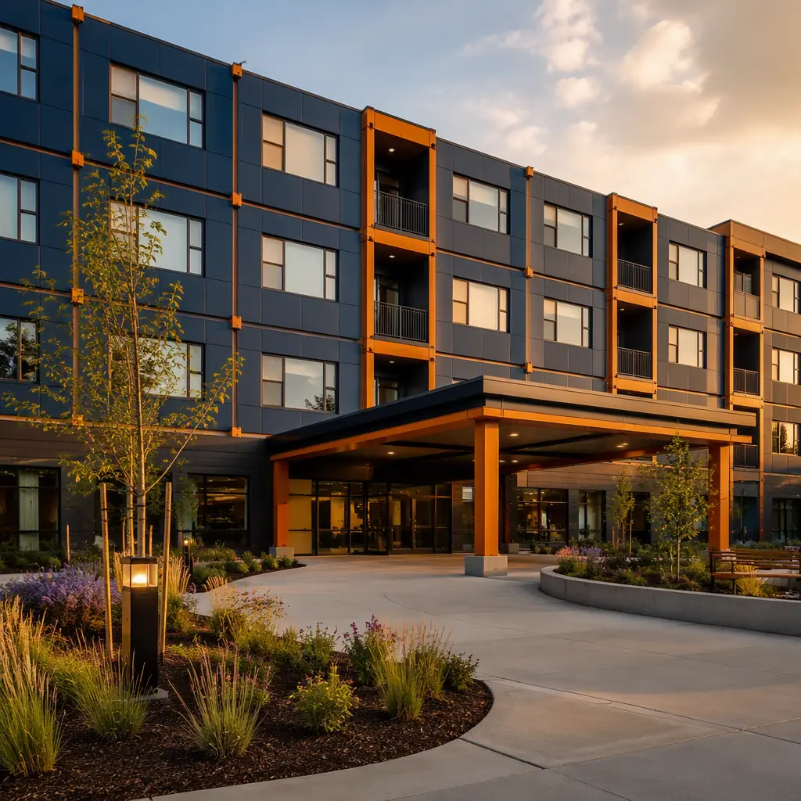
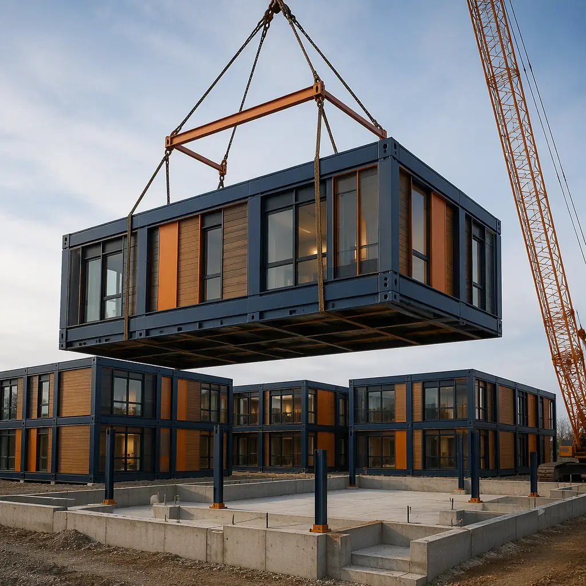
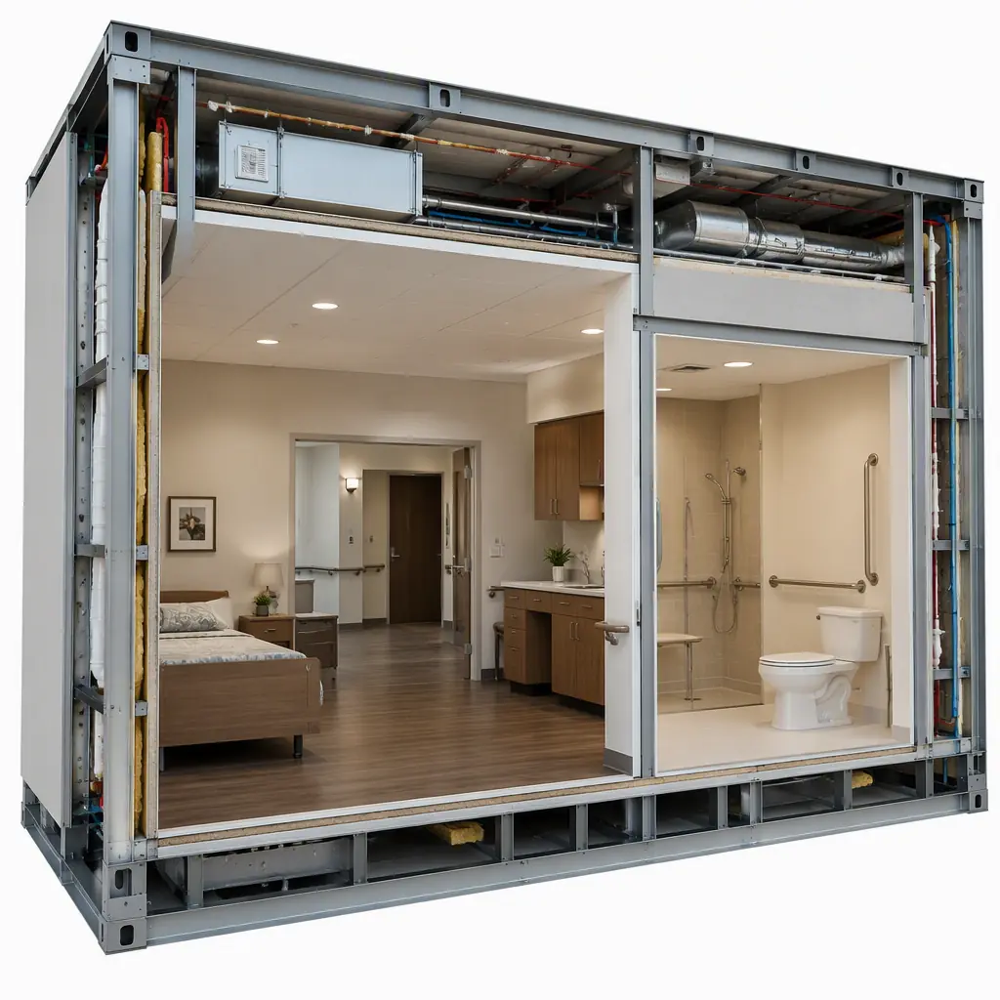

The United States is adding roughly 10,000 new residents to the 65+ population every day, and the assisted living industry is struggling to build capacity fast enough to meet it. A typical 60–80 unit assisted living facility (ALF) takes 18–30 months to deliver through conventional construction — a timeline that misses the demographic wave, absorbs 12–18 months of interest carry, and forces operators to turn away residents who have nowhere else to go. Modular prefabricated construction compresses that delivery to 9–14 months: licensed resident units, memory care neighborhoods, dining and activity spaces, and clinical support areas are built as factory-assembled steel-frame modules with resident-safety systems pre-installed, then set on the foundation in weeks. This guide covers the assisted living building program, the memory care design standards that differentiate a marketable community, licensing and code compliance, and the cost and phasing math for operators and developers. For the broader category, see our modular senior living guide, and for the clinical building pattern, modular healthcare facility construction.

The Assisted Living Demand Problem
Assisted living is the fastest-growing segment of senior housing, and the supply gap is measurable. The 75+ population — the core ALF demographic — is projected to grow from 22 million today to 34 million by 2040, while the industry builds only a fraction of the units needed to keep pace. Occupancy has recovered to the low-to-mid 80s nationally, and in high-demand metros operators report waitlists of 6–12 months for memory care units specifically. The construction bottleneck is real: conventional ALF projects are slowed by skilled labor shortages (senior housing construction labor costs rose 8–12% year-over-year through 2025), weather exposure, and the coordination of a dozen trades on site. Modular delivery moves the critical path indoors — modules are fabricated in climate-controlled factories while site work proceeds in parallel — cutting total schedule by 40–50% and converting a multi-year capital project into a single construction season. The schedule-compression economics are the same ones documented in our modular scheduling guide.
The Assisted Living Building Program
A modern ALF is not a single building type but a campus of distinct program areas, each with its own code and design requirements:
- Resident living units. Private and semi-private rooms with full or accessible bathrooms — typically 250–400 sq ft per unit. Units are grouped into households or neighborhoods of 12–20 residents to support staffing ratios and social connection.
- Memory care neighborhoods. Secure, self-contained units for residents with Alzheimer's and dementia — typically 15–25% of an ALF's beds — with locked access, enclosed courtyards, and specialized wayfinding.
- Dining and activity spaces. A central dining room serving three meals plus snacks, a kitchen (often a serveries-and-commissary model), activity rooms, a salon, and a fitness space.
- Clinical and support areas. Medication rooms, nurse stations, therapy rooms, resident laundry, housekeeping, and administrative offices — the operational spine of the building.
- Common amenities. Lobbies, lounges, a bistro or cafe, and outdoor spaces designed for accessibility and supervision.
Each of these program areas maps cleanly onto modular construction: resident units are individual modules (or pairs of modules forming a unit), memory care neighborhoods are module clusters with factory-installed security doors, and common areas use open-plan modules with clear-span interiors. The space-planning logic parallels modular hotel construction, which solves the same repeated-unit problem at scale.

Memory Care Design — The Competitive Differentiator
Memory care is where assisted living operators win or lose, and where modular construction actually has a design advantage. Dementia care research points to small-house models — 12–16 resident households with open kitchens, secured courtyards, and continuous sightlines — that reduce agitation and medication use. These models demand exactly what modular delivers: repeated, identical household modules produced to a validated prototype. Key memory care design elements factory-built into modules include:
- Secure neighborhoods. Locked egress doors with delayed-exit alarms, fenced courtyards, and a single controlled entrance — installed and tested in the factory, not improvised on site.
- Wayfinding without confusion. Color-coded corridors, visual cues at every doorway, and circular or figure-eight circulation paths that eliminate dead ends — coordinated across modules before the first unit is set.
- Wander management infrastructure. Door alarms, bed sensors, and resident-worn locator systems are wired into the module during fabrication, with the nurse station receiving live alerts at the factory-tested panel.
- Sensory design. Circadian lighting, acoustic treatments to reduce noise (a documented agitation trigger), and secure outdoor access — all specified as standard module options.
Because the memory care module is prototyped once and repeated, operators get a design that has been refined, code-reviewed, and debugged across deployments — the quality-consistency model described in modular factory QC systems.

Licensing, Codes & Compliance for Modular ALFs
Assisted living is one of the most regulated building types in the US, and compliance is a state-by-state discipline. ALFs are licensed under state health and human services regulations that govern unit size, staffing, fire safety, and life safety, while the building itself must meet the International Building Code with occupancy-specific requirements — typically NFPA 101 Life Safety Code Chapter 32 (new residential board and care), automatic fire sprinklers, smoke detection in every resident room, and ADA accessibility throughout. Modular construction supports compliance in two ways:
- Factory-inspected life safety systems. Sprinklers, fire alarm, emergency lighting, and nurse call are installed and tested at the factory under documented inspection — the third-party inspections that govern modular plants (IPIA/SAF, state modular programs) produce the exact as-built documentation regulators ask for. See modular fire safety construction for the assembly-level detail.
- Accessibility engineered in. ADA-required clearances, grab bars, roll-in showers, and lever hardware are built into the module design rather than retrofitted — the compliance approach covered in our ADA compliance guide.
State approval paths differ: some states license the modular plant and its inspection process, others require site-specific plan review. Experienced modular ALF developers front-load the state review with the manufacturer's documentation, compressing the approval cycle by 2–4 months versus conventional projects that must coordinate inspections across a dozen on-site trades. The permitting strategy is detailed in our permitting and zoning guide.
Resident Safety & MEP Systems
The systems that protect residents — and the staffing that responds to them — are the operational heart of an ALF. Modular delivery integrates them at the factory:
- Nurse call and emergency response. Pull cords in bathrooms, bedside call buttons, and wireless pendants terminate at a central response panel; the wiring and device placement are factory-installed and factory-tested, eliminating the classic failure mode of mis-wired field installations.
- Fire protection. Residential sprinklers, smoke detection, and alarm annunciation are installed per NFPA 13R/13D equivalents in every resident module, with corridor separation and egress rated assemblies factory-built.
- HVAC with infection control. Individual unit temperature control, positive pressure in clean zones, and MERV-13 filtration reduce airborne disease spread — the indoor-air strategy detailed in modular HVAC and indoor air quality.
- Backup power. Life-safety loads (egress lighting, nurse call, refrigeration for medications, elevator operation) connect to generator-ready transfer switches wired during fabrication, so a multi-day outage never strands residents without power.
Cost Structure — Modular vs. Conventional ALF
| Cost Category | Conventional (70-unit ALF) | Modular (70-unit ALF) |
|---|---|---|
| Construction cost per sq ft | $220–320 | $195–285 (factory-built) |
| Total project (70 units, ~70,000 sq ft) | $15.4–22.4M | $13.7–20.0M |
| Design & engineering (incl. prototypes) | $0.9–1.4M | $0.7–1.1M |
| Interest carry & financing during build | $1.4–2.2M (18–30 mo) | $0.7–1.2M (9–14 mo) |
| Total Delivered Cost | $17.7–26.0M | $15.1–22.3M |
The 10–15% construction saving is real, but the decisive number is schedule: opening 9–14 months earlier means 9–14 months of revenue (a stabilized 70-unit ALF generates roughly $4–6M in annual resident fees) and a shorter path to stabilized occupancy. Full cost benchmarking is in our 2026 modular cost guide, and the financing structure for senior housing is covered in our development financing guide.
Phased Delivery & Campus Expansion
Assisted living operators rarely build their full program at once — and modular is uniquely suited to the phased model. A developer can open the first 40-unit wing (independent and assisted living) in a single construction season, lease it up, and add a memory care wing or second household in the next phase without disturbing occupied units. The same design package can replicate across a portfolio: operators building five ALFs in five states produce one prototype, then deploy identical modules to each site — cutting design cost per site by 50–70% and standardizing staff training, maintenance, and spare parts. The expansion mechanics are covered in modular building additions and expansions, and the multi-site replication model in our franchise rollout guide.
Is Modular Right for Your Assisted Living Project?
Modular delivery wins for ALF projects with a hard opening date (an expiring lease, a licensed-care market with a waitlist, a competitive first-mover advantage in a submarket), for operators repeating a prototype across a portfolio, and for sites where a compressed site-construction window — harsh winters, constrained urban parcels, an existing campus to expand around — rewards moving work into the factory. For a single boutique ALF with flexible timing and a conventional design, stick-built may remain competitive; for the standard program — resident units, memory care, dining, and clinical support — modular construction converts a 2-year capital project into a single-season deliverable, with resident-safety systems built in rather than added on. The same factory-built logic that serves healthcare construction and senior living communities applies to the facilities where the fastest-growing demographic will live.